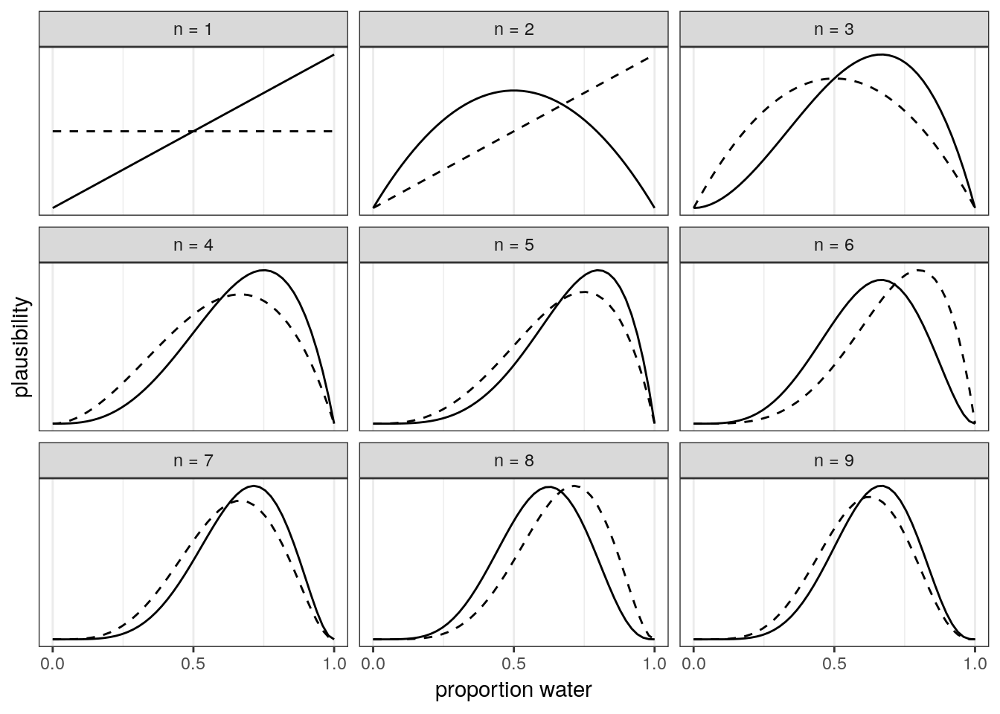

2 Introduction to Bayesian data analysis
Statistical inference is concerned with drawing conclusions, from numerical data, about quantities that are not observed. – Gelman et al. BDA3: 4.
Bayesian data analysis is just a logical procedure for processing information. – McElreath Statistical Rethinking: 12.
2.1 Objectives
- Learn what a (Bayesian) model actually means.
- Introduce the logic behind Bayesian updating.
- Dip our toes into numerical methods using brms.
- Cover the basics of summarizing a posterior distribution using tidybayes.
2.2 Reading
The following materials are recommended prereadings before starting this tutorial.
- Chapter 1 “The Golem of Prague” from Statistical Rethinking by Richard McElreath.
- Chapter 2 “Small Worlds and Large Worlds” from Statistical Rethinking by Richard McElreath.
- OPTIONAL Chapter 3 “Sampling the Imaginary” from Statistical Rethinking by Richard McElreath.
Most of this section is based on material presented in Statistical Rethinking and code material from Solomon Kurz’s rewrite of Statistical Rethinking.
library(pacman)
p_load(tidyverse, brms, tidybayes)
theme_set(theme_bw())2.3 Learning from data
Bayesian inference is a fancy way of counting and comparing possibilities. As we collect and analyze our data, we learn which possibilities are more plausible than others. The logical strategy is “When we don’t know what caused the data, potential causes that may produce the data in more ways are more plausible.”
2.3.1 Counting and plausibility
We’re going to use a simple example from Statistical Rethinking to start our thinking about Bayesian analysis.
Setup: We’ve got a bag with four marbles. Each marble can be either blue (B) or white (W). We don’t know the composition of the bag. Our goal is to figure out which of possible configuration is most plausible, given whatever evidence we learn about the bag. A sequence of three marbles have pulled from the bag, one at a time, returned to the bag, and then the bag is shaken before drawing another. We draw the sequence [B W B].
How many ways are there to produce this draw? Try first this possible bag composition: [B W W W].
Here is the full table of ways to produce [B W B] given each possible bag composition.
| conjecture | ways to produce [B W B] |
|---|---|
| [W W W W] | 0 x 4 x 0 = 0 |
| [B W W W] | 1 x 3 x 1 = 3 |
| [B B W W] | 2 x 2 x 2 = 8 |
| [B B B W] | 3 x 1 x 3 = 9 |
| [B B B B] | 4 x 0 x 4 = 0 |
What happens when we draw another marble from the bag? We update the counts! How do we update the counts? We multiply the prior counts by the new count, with the old counts are acting as our prior counts. Here is an example how we would update our counts if we were to draw an additional [B].
| conjecture | ways to produce [B] | previous counts | new count |
|---|---|---|---|
| [W W W W] | 0 | 0 | 0 x 0 = 0 |
| [B W W W] | 1 | 3 | 3 x 1 = 3 |
| [B B W W] | 2 | 8 | 8 x 2 = 16 |
| [B B B W] | 3 | 9 | 9 x 3 = 27 |
| [B B B B] | 4 | 0 | 0 x 4 = 0 |
Logically, what we’ve just done can be expressed as
But these are just counts and plausibilities; we want probabilities! First, to make explaining ourselves simpler, let’s define \(p\) as the proportion of blue marbles in the bag and \(D_{new}\) as our data. We can now rewrite the previous statement as:
We want to standardize the measure of plausibility so that the sum of the plausibilities for all conjectures sums to 1. To standardize, we add up all the products, one for each \(p\), then divide each product by the sum of the products.
| possible combinations | \(p\) | ways to produce data | plausibility |
|---|---|---|---|
| [W W W W] | 0 | 0 | 0 |
| [B W W W] | 0.25 | 3 | 0.15 |
| [B B W W] | 0.5 | 8 | 0.40 |
| [B B B W] | 0.75 | 9 | 0.45 |
| [B B B B] | 1 | 0 | 0 |
This process is equivalent to
Each part of the calculations we’ve done so far correspond directly to quantities in applied probability theory.
- The conjectured proportion of blue marbles, \(p\), is usually called a parameter.
- The relative number of ways that \(p\) can produce the data is usually called the likelihood.
- The prior plausibility of a specific \(p\) is called the prior probability.
- The updated plausibility of any specific \(p\) is called the posterior probability.
2.4 Building a model
Bayesian inference is made easier by working with probabilities instead of counts, but this makes everything look a lot harder. Let’s explore this with a new problem.
Setup: We’ve a globe with land and water sections. We want to know how much of the globe is water. Our strategy is to throw the globe up, catch it, and note the surface under the right index finger. Let’s do this 9 times.
d <- tibble(toss = c("w", "l", "w", "w", "w", "l", "w", "l", "w"))
# then rephrase in terms of trials and count of water
(d <- d %>%
mutate(n_trials = 1:9,
n_success = cumsum(toss == "w")))## # A tibble: 9 x 3
## toss n_trials n_success
## <chr> <int> <int>
## 1 w 1 1
## 2 l 2 1
## 3 w 3 2
## 4 w 4 3
## 5 w 5 4
## 6 l 6 4
## 7 w 7 5
## 8 l 8 5
## 9 w 9 6To get the logic machinery working, we need to make some assumptions. These assumptions constitute our model. An ideal design loop for developing a Bayesian model has three steps:
- Data story
- Describe aspects of the underlying reality and the sampling process.
- Translate this description into a formal probability model.
- Acts as a framework for interpretation, but still just a story.
- Helps with realizing additional questions that must be answered as hypotheses are frequently vague.
- Updating
- Bayesian models begin with a set of plausibilities assigned to each possibility (Prior).
- Update those plausibilities based on the data to give posterior plausibility.
- Evaluate
- Certainty is no guarantee that the model is good or accurate.
- Supervise and critique your model!
- Check model’s adequacy for some purpose, or in light of stuff we don’t know.
2.4.1 A data story
How did the data come to be? A data story is a description of the aspects of the reality underlying our data, including the sampling process. This story should be sufficient to specifying an algorithm to simulate new data. Write out the data story for the globe tossing activity.
2.4.2 Bayesian updating
A Bayesian model begins with one set of plausibilities assigned to each possible result: the prior plausibilities. These values are updated in light of data to produce our posterior plausibilities. This process is called Bayesian updating.
Here is an illustration of Bayesian updating applied to our globe tossing experiment. The posterior generated at each observation becomes the prior for the subsequent observation.
sequence_length <- 50 # how many points to calculate prob for
d %>%
expand(n_trials, # for each value of ...
p_water = seq(from = 0, to = 1, length.out = sequence_length)) %>%
left_join(d, by = "n_trials") %>%
group_by(p_water) %>%
# lag is the *previous* value
mutate(lagged_n_success = lag(n_success, k = 1),
lagged_n_trials = lag(n_trials, k = 1)) %>%
ungroup() %>%
# if first time, flat prior.
# otherwise use previous posterior as new prior.
mutate(prior = ifelse(n_trials == 1,
.5,
dbinom(x = lagged_n_success,
size = lagged_n_trials,
prob = p_water)),
strip = str_c("n = ", n_trials), # which draw is it?
likelihood = dbinom(x = n_success,
size = n_trials,
prob = p_water)) %>% # calculate likelihood for current draw
# normalize the prior and the likelihood, making them probabilities
group_by(n_trials) %>%
mutate(prior = prior / sum(prior),
likelihood = likelihood / sum(likelihood)) %>%
ggplot(aes(x = p_water)) +
geom_line(aes(y = prior), linetype = 2) +
geom_line(aes(y = likelihood)) +
scale_x_continuous("proportion water", breaks = c(0, .5, 1)) +
scale_y_continuous("plausibility", breaks = NULL) +
facet_wrap(~strip, scales = "free_y")
Side note on sample size: Bayesian estimates are valid and interpretable at any sample size. This fact is very much in contrast to the folk-wisdom around a minimum number of samples needed that you’ll hear in non-Bayesian contexts. In non-Bayesian contests, statistical inference is justified by behaviour at large samples sizes, called asymptotic behaviour. The reason Bayesian estimates are always valid and interpretable comes down to the prior. If the prior is bad, the resulting posterior could be misleading. Regardless, all estimates in either context are based on assumptions – the assumptions made during Bayesian analysis are just more obvious and capable of being directly interrogated.
2.4.3 Evaluate
Our model is learning from a “small world” of data. If there are important differences between the model and reality, then there is no guarantee of “large world” performance.
Certainty is no guarantee that the model is good, either. As the amount of data increases, our model will become increasingly sure of the proportion of water. This sureness happens even if the model is seriously misleading because our estimates are conditional on our model. What is happening is that, given a specific model, we can be sure that plausible values are within a narrow range.
It is important that you supervise and critique your model, and not just assume it worked or is correct because your code did not return an error. Anything that is not included in our model might not affect our inference directly, but might affect it indirectly because of that unmodeled dependence. For example, we currently are assuming that the order the data was collected in doesn’t matter (exchangeable), but what if the order of the observations actually did matter? Check the model’s inferences in light of aspects of the data that you know but the model doesn’t know about. This part of data analysis is an inherently creative endeavor that is up to you (the analyst) and your scientific community. Robots can’t do this step for you.
The goal when evaluating your model is not to test the truth of the model’s assumptions. Our model’s assumptions can never be exactly right as they are not the true data generating process. Failure to prove that our model false is a failure of our imagination, not a success of our model. Additionally, a model doesn’t have to be true in order to produce precise and useful inference. Models are information processing machines, and there are parts of information that cannot be easily represented by framing our problem in terms of the truth of our assumptions.
Instead, our objective should be to test the model’s adequacy for some purpose. What are we trying to learn? This means asking and answering more questions than those originally used to construct our model. Think about what you already know as a domain expert and compare this knowledge to your model’s estimates/predictions; if there is a conflict you should update your model (likelihood and/or prior) to better reflect your domain knowledge. It is hard to give general advice on model evaluation as there are lots of different contexts for evaluating the adequacy of a model – prediction, comprehension, measurement, and persuasion. These are inherently scientific questions, not statistical questions. As I said earlier, robot’s can’t do this step for you.
2.5 Terms and theory
- Common notation
- \(y\) observed data.
- \(\tilde{y}\) unobserved data.
- \(X\) explanatory variables, covariates, etc.
- \(\Theta\) parameters of interest.
- \(p(\cdot|\cdot)\) conditional probability distribution.
- \(p(\cdot)\) marginal probability distribution.
- \(p(\cdot,\cdot)\) joint probability distribution.
- \(Pr(\cdot)\) probability of an event.
- Likelihood
- Specifies the plausibility of data mathematically.
- Maps each conjecture onto the relative number of ways the data could occur, given that possibility.
- Sometimes written \(p(y | \Theta)\) or \(L(\Theta | y)\).
- Parameters
- Adjustable inputs.
- 1+ quantities we want to know about.
- Represent the different conjectures for causes or explanations of the data
- Difference between data and parameters is fuzzy and exploitable in Bayesian analysis –> advanced topic
- Prior
- Every parameter you are trying to estimate must be provided a prior.
- The “initial conditions” of the plausibility of each possibility.
- Which parameters values do we think are more plausible than others?
- Constrain parameters to reasonable ranges.
- Express any knowledge we have about that parameter before any data is observed.
- An engineering assumption; helps us learn from our data.
- Regularizing or weakly informative priors are conservative in that they tend to guard against inferring strong associations between variables –> advanced topics.
- Sometimes written \(p(\Theta)\).
- Posterior
- Logical consequence of likelihood, the set of parameters to estimate, and priors for each parameter.
- The relative plausibility of different parameter values, conditional on the data.
- Sometimes written \(p(\Theta | y)\).
2.6 Bayes’ Theorem
The logic defining the posterior distribution is called Bayes’ Theorem. The theorem itself is an intuitive result from probability theory.
First, describe the model and data as a joint probability. \[ \begin{align} p(y, \Theta) &= p(\Theta | y) p(y) \\ p(y, \Theta) &= p(y | \Theta) p(\Theta) \\ \end{align} \]
Then set equal to each other and solve for \(p(\Theta | y)\): \[ \begin{align} p(\Theta | y) p(y) &= p(y | \Theta) p(\Theta) \\ p(\Theta | y) &= \frac{p(y | \Theta) p(\Theta)}{p(y)} \\ \end{align} \]
Et voilà, Bayes’ Theorem. The probability of any particular value of \(\Theta\), given the data, is equal to the product of the likelihood and the prior, divided by \(p(y)\).
“But what’s \(p(y)\)?” you ask. The term \(p(y)\) is a confusing one – it can be called the “average likelihood,” “evidence,” or “probability of the data.” The average likelihood here means it is averaged over the prior and its job is to standardize the posterior so it integrates to 1. \(p(y)\) is expressed mathematically as:
\[ p(y) = E(p(y | \Theta)) = \int p(y | \Theta) p(\Theta) d\Theta \]
\(E(\cdot)\) means to take the expectation, a (weighted) average. Notice also that \(p(y)\) is a type of marginal probability distribution; the process of integrating out a term (\(\Theta\)) is called marginalization – we are averaging \(y\) over all values of \(\Theta\). Remember also that an integral is like an average over a continuous distribution of values.
2.7 But how does it work?
Our model has three parts: likelihood, parameters, and the prior. These values get put into a “motor” that gives us a posterior distribution. The motor goes through the process of conditioning the prior on the data.
Turns out that knowing all the rules doesn’t necessarily help us with the calculations. For most interesting models we will ever consider, the necessary integrals in the Bayesian conditioning machinery have no closed form and can’t be calculated no matter how talented you are. Each new parameter effectively adds a new level to the integral used to calculate \(p(y)\). Instead, we need to rely on numerical techniques to approximate the mathematics defined in Bayes’ theorem.
All the numerical techniques we use produce only samples from the posterior distribution, not the distribution itself. Luckily, samples from the distribution are easier to work with than the actual distribution – this way we don’t have to do integrals.
2.7.1 Grid approximation
One of the simplest conditioning techniques is grid approximation. While most parameters are continuous, we can get a decent approximation of them by considering only a finite grid of parameter values. For any particular value \(p'\), compute the posterior probability by multiplying the prior probability of \(p'\) by the likelihood of \(p'\).
Grid approximation is a teaching tool that forces you to really understand the nature of Bayesian updating. You will probably never use it in your actual work mostly because grid approximation scales very poorly as the number of parameters increases.
How to do grid approximation:
- Define a grid (range of values to look at).
- Calculate the value of the prior at each parameter value of the grid.
- Compute the likelihood at each parameter value.
- Compute the unstandardized posterior at each parameter, but multiplying the prior by the likelihood.
- Standardize the posterior by dividing each value by the sum of all unstandardized values.
The number of points you evaluate on the grid determines the precision of your estimates. More points, finer grained posterior.
For example, here’s the posterior probability of the percent of water on the globe given our data evaluated at 5 points and 20 points.
tibble(p_grid = seq(from = 0, to = 1, length.out = 5), # define grid
prior = 1) %>% # define prior
mutate(likelihood = dbinom(6, size = 9, prob = p_grid), # compute likelihood at each value in grid
unstd_posterior = likelihood * prior, # computer product of likelihood and prior
posterior = unstd_posterior / sum(unstd_posterior)) %>% # standardize the posterior, so it sums to 1
# make a plot
ggplot(aes(x = p_grid, y = posterior)) +
geom_point() +
geom_line() +
labs(subtitle = "5 points",
x = "probability of water",
y = "posterior probability")tibble(p_grid = seq(from = 0, to = 1, length.out = 20), # define grid
prior = 1) %>% # define prior
mutate(likelihood = dbinom(6, size = 9, prob = p_grid), # compute likelihood at each value in grid
unstd_posterior = likelihood * prior, # compute product of likelihood and prior
posterior = unstd_posterior / sum(unstd_posterior)) %>% # standardize the posterior, so it sums to 1
# make a plot
ggplot(aes(x = p_grid, y = posterior)) +
geom_point() +
geom_line() +
labs(subtitle = "20 points",
x = "probability of water",
y = "posterior probability")
2.7.2 Markov chain Monte Carlo
For many models, grid approximation or quadratic approximation just aren’t good enough. Grid approximation takes too long as your model gets bigger. Quadratic approximation chokes on complex models. Instead, we end up having to use a technique like Markov chain Monte Carlo (MCMC).
Unlike grid approximation, where we computed the posterior distribution directly, MCMC techniques merely draw samples from the posterior. You end up with a collection of parameter values, where the frequencies of those values correspond to the posterior plausibilities.
Let’s do a quick example where we fit this model using brms. This package acts as an interface with Stan probabilistic programming language which implements Hamiltonian Monte Carlo sampling, a fancy type of MCMC. The function brm() is the workhorse of the brms package, and builds and compiles a Stan model as defined in R. If you’ve used functions like lm() or glm(), the syntax should look familiar to you.
# this can take a bit as the model compiles
globe_brms <-
brm(data = list(w = 24), # generate data
family = binomial(link = "identity"), # define likelihood distribution
formula = w | trials(36) ~ 1, # define parameter
prior = prior(uniform(0, 1), class = Intercept), # give prior to parameter
control = list(adapt_delta = 0.95), # control sampling behavior --> advanced topic
refresh = 0, # silences a bunch of text
iter = 2000, # how many draws from posterior? (default)
warmup = 1000) # how many draws till we start recording (default = 1/2 iter)print(globe_brms)## Family: binomial
## Links: mu = identity
## Formula: w | trials(36) ~ 1
## Data: list(w = 24) (Number of observations: 1)
## Samples: 4 chains, each with iter = 2000; warmup = 1000; thin = 1;
## total post-warmup samples = 4000
##
## Population-Level Effects:
## Estimate Est.Error l-95% CI u-95% CI Eff.Sample Rhat
## Intercept 0.66 0.08 0.50 0.79 1214 1.00
##
## Samples were drawn using sampling(NUTS). For each parameter, Eff.Sample
## is a crude measure of effective sample size, and Rhat is the potential
## scale reduction factor on split chains (at convergence, Rhat = 1).# look at the posterior distribution of proportion water
globe_brms %>%
spread_draws(b_Intercept) %>%
ggplot(aes(x = b_Intercept)) +
geom_line(stat = 'density') +
scale_x_continuous('proportion water',
limits = c(0, 1)) +
scale_y_continuous(NULL, breaks = NULL)

2.8 Working with samples
In applied Bayesian analysis we rarely work directly with the integrals required by Bayes’ theorem. Most numerical techniques we use, including MCMC methods, produce a set of samples that are individual draws from the posterior distribution. These samples transform a problem in calculus to a problem in data summary. It is easier to count the number of samples within an interval then calculate the integral for that interval.
This section also serves as a brief introduction to summarizing posterior samples using tidybayes, which we will continue using in our next lesson.
Once our model produces a posterior distribution, the model’s work is done. It is now our job to summarize and interpret that posterior. Common questions we might want to ask include:
- How much posterior probability lies below some parameter value?
- How much posterior probability lies between two parameter values?
- Which parameter value marks the lower 5% of the posterior probability?
- Which range of parameter values contains 90% of the posterior probability?
- Which parameter value has the highest posterior probability?
2.8.1 Intervals of defined boundaries
What is the posterior probability that the proportion of water is less than 50%? Count the number of observations that are less than 0.5, then divide by the number of samples.
globe_brms %>%
spread_draws(b_Intercept) %>%
dplyr::summarize(p_val = sum(b_Intercept < 0.5) / length(b_Intercept))## # A tibble: 1 x 1
## p_val
## <dbl>
## 1 0.0278What if we want to know the posterior probability that the proportion of water is between 0.5 and 0.75?
globe_brms %>%
spread_draws(b_Intercept) %>%
dplyr::summarize(p_val = sum(b_Intercept > 0.5 & b_Intercept < 0.75) / length(b_Intercept))## # A tibble: 1 x 1
## p_val
## <dbl>
## 1 0.8622.8.2 Intervals of defined mass
An interval of defined mass report two parameter values that contain between them the specified amount of posterior probability, a probability mass. You probably have heard of confidence intervals – an interval of posterior probability is called a credible interval, though the distinction between the terms isn’t terribly important.
There are two kinds of intervals of defined mass: percentile (or quantile) interval, and highest posterior density interval.
2.8.2.1 Percentile interval (PI)
For example, you may want to know the boundaries of the lower 80% posterior interval. This interval has to start at 0, but where does it stop? How do we calculate the 80th percentile?
globe_brms %>%
spread_draws(b_Intercept) %>%
dplyr::summarize(q80 = quantile(b_Intercept, 0.8))## # A tibble: 1 x 1
## q80
## <dbl>
## 1 0.723What about the middle 80% interval? There are lots of ways to get this information, so here are two examples.
# one way
(qu <- globe_brms %>%
spread_draws(b_Intercept) %>%
dplyr::summarize(q10 = quantile(b_Intercept, 0.1),
q90 = quantile(b_Intercept, 0.9)))## # A tibble: 1 x 2
## q10 q90
## <dbl> <dbl>
## 1 0.555 0.754# another way
globe_brms %>%
spread_draws(b_Intercept) %>%
select(b_Intercept) %>%
pull() %>%
quantile(prob = c(0.1, 0.9)) ## 10% 90%
## 0.5549006 0.7542126We can also plot this interval on the distribution.
# plot the distribution
p1 <- globe_brms %>%
spread_draws(b_Intercept) %>%
ggplot(aes(x = b_Intercept)) +
geom_line(stat = 'density') +
scale_y_continuous(NULL, breaks = NULL) +
scale_x_continuous(limits = c(0, 1))
# get back the density line calculation
p1_df <- ggplot_build(p1)$data[[1]] # this is messy
# shade area under the distribution
p1 + geom_area(data = subset(p1_df, x > qu$q10 & x < qu$q90),
aes(x=x,y=y),
fill = "black",
color = NA) 2.8.2.2 Highest posterior density interval
An HPDI is defined as the narrowest interval containing the specified probability mass. There are an infinite of posterior intervals with the same mass, but what if you want that interval that best represents the parameter values most consistent with the data AND you want the densest of these intervals.
Here an example of a 50% HPDI
globe_brms %>%
spread_draws(b_Intercept) %>%
select(b_Intercept) %>%
pull() %>%
hdi(.width = 0.5)## [,1] [,2]
## [1,] 0.6137909 0.7158464# compare to 50% PI
globe_brms %>%
spread_draws(b_Intercept) %>%
select(b_Intercept) %>%
pull() %>%
qi(.width = 0.5)## [,1] [,2]
## [1,] 0.6082956 0.7113937Why are the PI and HPDI not equal?
If the choice of interval makes a big difference in your summary, then you probably shouldn’t be using intervals to summarize the posterior! The entire distribution of samples is our actual estimate, these summaries are just there to help digest this wealth of information. Do not only work with simplified versions of our posterior estimates!
2.8.3 Point estimates
Sometimes we only want a single point from the distribution. Given an entire posterior distribution, what value should we report? Mechanically, this task is simple – pick a summary (e.g. mean) and go. Conceptually, however, this task is actually quite complex. The Bayesian parameter estimate is the entire posterior distribution, and not just a single number. In most cases, it is unnecessary to choose a single point estimate. It is always better to report more than necessary about the posterior distribution than not enough.
The three most common point estimates are the mean, median, and mode – you’re probably already familiar with all three of them. A principled way of choosing among these three estimates is considering as products of different loss functions. Loss functions are an advanced topic we will not cover today but I encourage you to read up on; here’s a good blog entry by John Myles White on the subject.
The mode represents the parameter value with the highest posterior probability, or the maximum a posteriori estimate (MAP). In frequentist contexts, the maximum likelihood estimate is the equivalent to mode of the likelihood function. Calculating the mode of a distribution is an optimization problem and isn’t always easy. Luckily, tidybayes has a function which gets us a mode (and other information) from the posterior samples.
Here is a code snippet that gives a mode and a middle 95% percentile interval:
globe_brms %>%
spread_draws(b_Intercept) %>%
select(b_Intercept) %>%
mode_qi()## # A tibble: 1 x 6
## b_Intercept .lower .upper .width .point .interval
## <dbl> <dbl> <dbl> <dbl> <chr> <chr>
## 1 0.662 0.497 0.794 0.95 mode qiWe could also report a mean or median. Here are some ways to do get these estimates along with some kind of interval:
# mean with 95% PI
globe_brms %>%
spread_draws(b_Intercept) %>%
select(b_Intercept) %>%
mean_qi()## # A tibble: 1 x 6
## b_Intercept .lower .upper .width .point .interval
## <dbl> <dbl> <dbl> <dbl> <chr> <chr>
## 1 0.658 0.497 0.794 0.95 mean qi# mean with 95% HPDI
globe_brms %>%
spread_draws(b_Intercept) %>%
select(b_Intercept) %>%
mean_hdci()## # A tibble: 1 x 6
## b_Intercept .lower .upper .width .point .interval
## <dbl> <dbl> <dbl> <dbl> <chr> <chr>
## 1 0.658 0.499 0.795 0.95 mean hdci# median with 95% PI
globe_brms %>%
spread_draws(b_Intercept) %>%
select(b_Intercept) %>%
median_qi()## # A tibble: 1 x 6
## b_Intercept .lower .upper .width .point .interval
## <dbl> <dbl> <dbl> <dbl> <chr> <chr>
## 1 0.661 0.497 0.794 0.95 median qi# median with 95% HPDI
globe_brms %>%
spread_draws(b_Intercept) %>%
select(b_Intercept) %>%
median_hdci()## # A tibble: 1 x 6
## b_Intercept .lower .upper .width .point .interval
## <dbl> <dbl> <dbl> <dbl> <chr> <chr>
## 1 0.661 0.499 0.795 0.95 median hdciUsually it is better to communicate as much about the posterior distribution as you can.
2.9 Summary
So far we’ve introduced the conceptual mechanism driving Bayesian data analysis. This framework emphasizes the posterior probability distribution, which is the logical compromise between our previous information and whatever new information we’ve gained (given our model). Posterior probabilities state the relative plausibility of each conjectured possibility that could have produced the data, given our model. These plausibilities are updated in light of observations, a process known as Bayesian updating.
We’ve defined the components of a Bayesian model: a likelihood, one or more parameters, and a prior for every parameter. The likelihood defines the plausibility of the data, given a fixed value for the parameters. The prior provides the initial plausibility of each parameter value, before accounting for the data. These components, when processed through Bayes’ Theorem, yield the posterior distribution.
Many of the actual calculations necessary to yield the posterior distribution have no closed-form solution and must instead be approximated using numerical methods. We covered grid approximation as a gentle introduction to sampling. We also fit our basic model using brms, which uses Stan’s HMC engine to condition our estimates on the data.
Given the posterior samples from our model fit, we also covered basic methods for summarizing a posterior distribution such as intervals and point estimates.